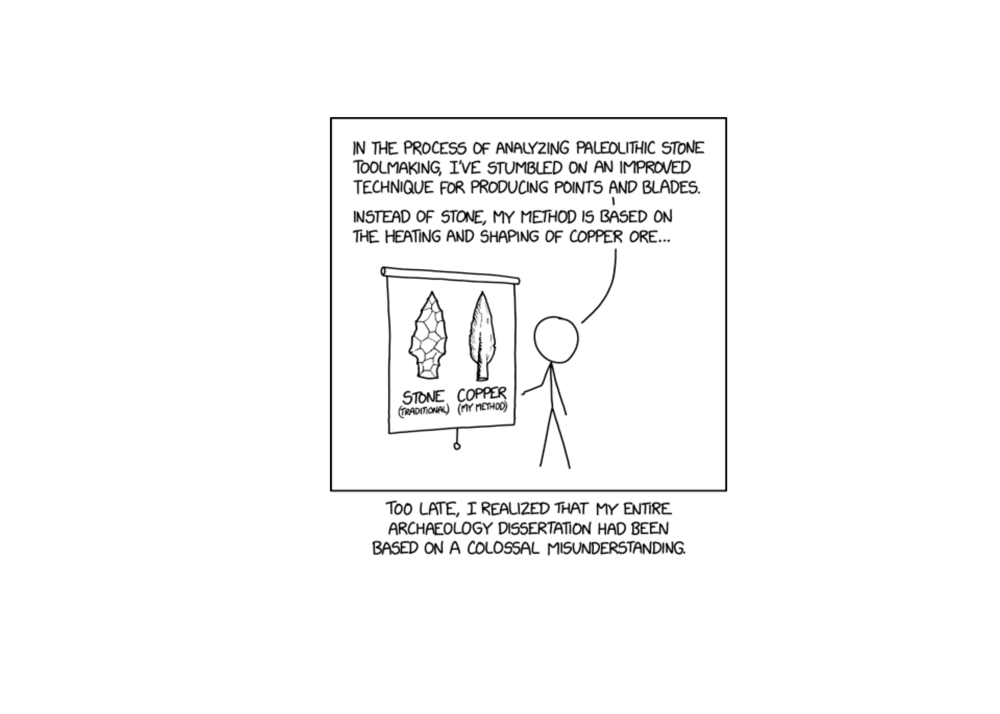

x = 1
y = 2
z = 0
aa <- function(x) {
print(paste("Entering aa(). x = ", x))
bb <- function(y) {
print(paste("Entering bb(). x = ", x, "y = ", y))
cc <- function(z) {
print(paste("Entering cc(). x = ", x, "y = ", y, "z = ", z))
cres <- z + y
print(paste("Returning", cres, "from cc()"))
cres
}
bres <- cc(3) + 2
print(paste("Returning", bres, "from bb()"))
bres
}
ares <- x + bb(4)
print(paste("Returning",ares, "from aa()"))
ares
}
aa(5)
## [1] "Entering aa(). x = 5"
## [1] "Entering bb(). x = 5 y = 4"
## [1] "Entering cc(). x = 5 y = 4 z = 3"
## [1] "Returning 7 from cc()"
## [1] "Returning 9 from bb()"
## [1] "Returning 14 from aa()"
## [1] 1413 Debugging
Now that you’re writing functions, it’s time to talk a bit about debugging techniques. This is a lifelong topic - as you become a more advanced programmer, you will need to develop more advanced debugging skills as well (because you’ll become more adept at screwing things up).
13.1 Objectives
Create reproducible examples of problems
Use built in debugging tools to trace errors
Use online resources to research errors
![A cartoon of a fuzzy round monster face showing 10 different emotions experienced during the process of debugging code. The progression goes from (1) “I got this” - looking determined and optimistic; (2) “Huh. Really thought that was it.” - looking a bit baffled; (3) “...” - looking up at the ceiling in thought; (4) “Fine. Restarting.” - looking a bit annoyed; (5) “OH WTF.” Looking very frazzled and frustrated; (6) “Zombie meltdown.” - looking like a full meltdown; (7) (blank) - sleeping; (8) “A NEW HOPE!” - a happy looking monster with a lightbulb above; (9) “insert awesome theme song” - looking determined and typing away; (10) “I love coding” - arms raised in victory with a big smile, with confetti falling.](../images/gen-prog/debugging.jpg)
13.2 Avoiding Errors: Defensive Programming
One of the best debugging strategies (that isn’t a debugging strategy at all, really) is to code defensively [1]. By that, I mean, code in a way that you will make debugging things easier later.
Modularize your code. Each function should do only one task, ideally in the least-complex way possible.
Make your code readable. If you can read the code easily, you’ll be able to narrow down the location of the bug more quickly.
Comment your code. This makes it more likely that you will be able to locate the spot where the bug is likely to have occurred, and will remind you how things are calculated. Remember, comments aren’t just for your collaborators or others who see the code. They’re for future you.
Don’t duplicate code. If you have the same code (or essentially the same code) in two or three different places, put that code in a function and call the function instead. This will save you trouble when updating the code in the future, but also makes narrowing down the source of the bug less complex.
Reduce the number of dependencies you have on outside software packages. Often bugs are introduced when a dependency is updated and the functionality changes slightly. The
tidyverse[2] is notorious for this.
Note
It’s ok to write code using lots of dependencies, but as you transition from “experimental” code to “production” code (you’re using the code without tinkering with it) you should work to reduce the dependencies, where possible. In addition, if you do need packages with lots of dependencies, try to make sure those packages are relatively popular, used by a lot of people, and currently maintained. (The tidyverse is a bit better from this perspective, because the constituent packages are some of the most installed R packages on CRAN.)
Another way to handle dependency management is to use the renv package [3], which creates a local package library with the appropriate versions of your packages stored in the same directory as your project. renv was inspired by the python concept of virtual environments, and it does also work with python if you’re using both R and python inside a project (e.g. this book uses renv). renv will at the very least help you minimize issues with code not working after unintentional package updates.
Add safeguards against unexpected inputs. Check to make sure inputs to the function are valid. Check to make sure intermediate results are reasonable (e.g. you don’t compute the derivative of a function and come up with “a”.)
Don’t reinvent the wheel. If you have working, tested code for a task, use that! If someone else has working code that’s used by the community, don’t write your own unless you have a very good reason. The implementation of
lmhas been better tested than your homegrown linear regression.Collect your often-reused code in packages that you can easily load and make available to “future you”. The process of making a package often encourages you to document your code better than you would a script. A good resource for getting started making R packages is [4], and a similar python book is [5].
13.3 Working through Errors
13.3.1 First steps
13.3.1.1 Get into the right mindset
You can’t debug something effectively if you’re upset. You have to be in a puzzle-solving, detective mindset to actually solve a problem. If you’re already stressed out, try to relieve that stress before you tackle the problem: take a shower, go for a walk, pet a puppy.
![a debugging manifesto. 1. inspect, dont squash. try to fix the bug (crossed out). understand what happened (yes, smiley faces and stars) 2. check your assumptions. person (thinking): "wait, how do I know thats true?" 3. being stuck is temporary. person (thinking): "I will never figure this out!" ... 2 minutes later.... person (thinking): "well, I havent tried X..." 4. dont go it alone. person (speaking to other person): "hey, have you seen this problem before?" 5. trust nobody and nothing. person (thinking): this library cant be buggy... OR CAN IT??? 6. there's always a reason. computer: "computers are always logical, even when it doesnt feel that way" 7. build your toolkit. person (holding toolkit): "wow, the CSS inspector makes debugging SO MUCH EASIER" 8. it can be an adventure. person (talking, with cute bug next to them): "you wouldnt BELIEVE the weird bug I found". by @b0rk @omarieclaire, more like this at https://wizardzines.com](../images/gen-prog/b0rk-debugging-manifesto.jpeg)
13.3.1.2 Check your spelling
I’ll guess that 80% of my personal debugging comes down to spelling errors and misplaced punctuation.

13.3.2 General Debugging Strategies
Debugging: Being the detective in a crime movie where you are also the murderer. - some t-shirt I saw once
While defensive programming is a nice idea, if you’re already at the point where you have an error you can’t diagnose, then… it doesn’t help that much. At that point, you’ll need some general debugging strategies to work with. The overall process is well described in [8]; I’ve added some steps that are commonly overlooked and modified the context from the original package development to introductory programming. I’ve also integrated some lovely illustrations from Julia Evans (@b0rk) to lighten the mood.
Realize that you have a bug
Read the error message

-
Google! Seriously, just google the whole error message.
In R you can automate this with theerroristandsearcherpackages. Python is so commonly used that you’ll likely be able to find help for your issue if you are specific enough.

-
Make the error repeatable: This makes it easier to figure out what the error is, faster to iterate, and easier to ask for help.
Use binary search (remove 1/2 of the code, see if the error occurs, if not go to the other 1/2 of the code. Repeat until you’ve isolated the error.)
Generate the error faster - use a minimal test dataset, if possible, so that you can ask for help easily and run code faster. This is worth the investment if you’ve been debugging the same error for a while.

Note which inputs don’t generate the bug – this negative “data” is helpful when asking for help.

Debugging strategy: Change working code into broken code [12] Figure out where it is. Debuggers may help with this, but you can also use the scientific method to explore the code, or the tried-and-true method of using lots of
print()statements.Come up with one question. If you’re stuck, it can be helpful to break it down a bit and ask one tiny question about the bug.

- Fix it and test it. The goal with tests is to ensure that the same error doesn’t pop back up in a future version of your code. Generate an example that will test for the error, and add it to your documentation. If you’re developing a package, unit test suites offer a more formalized way to test errors and you can automate your testing so that every time your code is changed, tests are run and checked.

There are several other general strategies for debugging:
Retype (from scratch) your code
This works well if it’s a short function or a couple of lines of code, but it’s less useful if you have a big script full of code to debug. However, it does sometimes fix really silly typos that are hard to spot, like having typed<--instead of<-in R and then wondering why your answers are negative.Visualize your data as it moves through the program. This may be done using
print()statements, or the debugger, or some other strategy depending on your application.Tracing statements. Again, this is part of
print()debugging, but these messages indicate progress - “got into function x”, “returning from function y”, and so on.Rubber ducking. Have you ever tried to explain a problem you’re having to someone else, only to have a moment of insight and “oh, never mind”? Rubber ducking outsources the problem to a nonjudgmental entity, such as a rubber duck1. You simply explain, in terms simple enough for your rubber duck to understand, exactly what your code does, line by line, until you’ve found the problem. See [15] for a more thorough explanation.
Do not be surprised if, in the process of debugging, you encounter new bugs. This is a problem that’s well-known enough that it has its own xkcd comic. At some point, getting up and going for a walk may help. Redesigning your code to be more modular and more organized is also a good idea.
13.4 Dividing Problems into Smaller Parts
“Divide each difficulty into as many parts as is feasible and necessary to resolve it.” -René Descartes, Discourse on Method
In programming, as in life, big, general problems are very hard to solve effectively. Instead, the goal is to break a problem down into smaller pieces that may actually be solvable.
Example: Exhaustion
This example inspired by [16].
“I’m exhausted all the time”
Ok, so this is a problem that many of us have from time to time (or all the time). If we get a little bit more specific at outlining the problem, though, we can sometimes get a bit more insight into how to solve it.
“I wake up in the morning and I don’t have any energy to do anything. I want to go back to sleep, but I have too much to do to actually give in and sleep. I spend my days worrying about how I’m going to get all of the things on my to-do list done, and then I lie awake at night thinking about how many things there are to do tomorrow. I don’t have time for hobbies or exercise, so I drink a lot of coffee instead to make it through the day.”
This is a much more specific list of issues, and some of these issues are actually things we can approach separately.
Moving through the list in the previous tab, we can isolate a few issues. Some of these issues are undoubtedly related to each other, but we can approach them separately (for the most part).
- Poor quality sleep (tired in the morning, lying awake at night)
- Too many things to do (to-do list)
- Chemical solutions to low energy (coffee during the day)
- Anxiety about completing tasks (worrying, insomnia)
- Lack of personal time for hobbies or exercise
- Get a check-up to rule out any other issues that could cause sleep quality degradation - depression, anxiety, sleep apnea, thyroid conditions, etc.
- Ask the doctor about taking melatonin supplements for a short time to ensure that sleep starts off well (note, don’t take medical advice from a stats textbook!)
- Reformat your to-do list:
- Set time limits for things on the to-do list
- Break the to-do list into smaller, manageable tasks that can be accomplished within a relatively short interval - such as an hour
- Sort the to-do list by priority and level of “fun” so that each day has a few hard tasks and a couple of easy/fun tasks. Do the hard tasks first, and use the easy/fun tasks as a reward.
- Set a time limit for caffeine (e.g. no coffee after noon) so that caffeine doesn’t contribute to poor quality sleep
- Address anxiety with medication (from 1), scheduled time for mindfulness meditation, and/or self-care activities
- Scheduling time for exercise/hobbies
- scheduling exercise in the morning to take advantage of the endorphins generated by working out
- scheduling hobbies in the evening to reward yourself for a day’s work and wind down work well before bedtime
When the sub-problem has a viable solution, move on to the next sub-problem. Don’t try to tackle everything at once. Here, that might look like this list, where each step is taken separately and you give each thing a few days to see how it affects your sleep quality. In programming, of course, this list would perhaps be a bit more sequential, but real life is messy and the results take a while to populate.
- [1] Make the doctor’s appointment.
- [5] While waiting for the appointment, schedule exercise early in the day and hobbies later in the day to create a “no-work” period before bedtime.
- [1] Go to the doctor’s appointment, follow up with any concerns.
- [1] If doctor approves, start taking melatonin according to directions
- [2] Work on reformatting the to-do list into manageable chunks. Schedule time to complete chunks using your favorite planning method.
- [4] If anxiety is still an issue after following up with the doctor, add some mindfullness meditation or self-care to the schedule in the mornings or evenings.
- [3] If sleep quality is still an issue, set a time limit for caffeine
- [2] Revise your to-do list and try a different tactic if what you were trying didn’t work.
13.5 Minimal Working (or Reproducible) Examples

If all else has failed, and you can’t figure out what is causing your error, it’s probably time to ask for help. If you have a friend or buddy that knows the language you’re working in, by all means ask for help sooner - use them as a rubber duck if you have to. But when you ask for help online, often you’re asking people who are much more knowledgeable about the topic - members of R core and really famous python developers browse stackoverflow and may drop in and help you out. Under those circumstances, it’s better to make the task of helping you as easy as possible because it shows respect for their time. The same thing goes for your supervisors and professors.
There are numerous resources for writing what’s called a “minimal working example”, “reproducible example” (commonly abbreviated reprex), or MCVE (minimal complete verifiable example). Much of this is lifted directly from the StackOverflow post describing a minimal reproducible example.
The goal is to reproduce the error message with information that is
- minimal - as little code as possible to still reproduce the problem
- complete - everything necessary to reproduce the issue is contained in the description/question
- reproducible - test the code you provide to reproduce the problem.
You should format your question to make it as easy as possible to help you. Make it so that code can be copied from your post directly and pasted into a terminal. Describe what you see and what you’d hope to see if the code were working.
Other Minimum Working Example/Reprex resources
- reprex package: Do’s and Don’ts
- How to use the reprex package - vignette with videos from Jenny Bryan
- reprex magic - Vignette adapted from a blog post by Nick Tierney
Example: MWEs
Note: You don’t need to know anything about SAS to understand this example.
A long time ago, when this book covered R and SAS, I had issues with SAS graphs rendering in black and white most of the time.
I started debugging the issue with the following code chunk:
```{{r sas-cat-aes-map-07, engine=“sashtml”, engine.path=“sas”, fig.path = “image/”}} libname classdat “sas/”;
PROC SGPLOT data=classdat.fbiwide; SCATTER x = Population y = Assault / markerattrs=(size=8pt symbol=circlefilled) group = Abb; /* maps to point color by default */ RUN; QUIT;
PROC SGPLOT data=classdat.fbiwide NOAUTOLEGEND; /* dont generate a legend / SCATTER x = Population y = Assault / markercharattrs=(size=8) markerchar = Abb / specify marker character variable */ group = Abb ; RUN; QUIT;
After running the code separately in SAS and getting a figure that looked like what I'd expected, I set out to construct a reproducible example so that I could post to the [SASmarkdown github issues page](https://github.com/Hemken/SASmarkdown/issues/14) and ask for help.
The first thing I did was strip out all of the extra stuff that didn't need to be in the chunk - this chunk generates 2 pictures; I only need one.
This chunk requires the fbiwide data from the `classdata` R package (that I exported to CSV); I replaced it with a dataset in the `sashelp` library.
When I was done, the chunk looked like this:
PROC SGPLOT data=sashelp.snacks; SCATTER x = date y = QtySold / markerattrs=(size=8pt symbol=circlefilled) group = product; /* maps to point color by default */ RUN; QUIT;
Then, I started constructing my reproducible example.
I ran `?sas_enginesetup` to get to a SASmarkdown help page, because I remembered it had a nice way to generate and run markdown files from R directly (without saving the Rmd file).
I copied the example from that page:13.6 indoc <- ’
title: “Basic SASmarkdown Doc” author: “Doug Hemken” output: html_document —
14 I’ve deleted the intermediate chunks because they screw
15 everything up when I print this chunk out
’ knitr::knit(text=indoc, output=“test.md”) rmarkdown::render(“test.md”)
Then, I created several chunks which would do the following:
1. Write the minimal example SAS code above to a [file](files/reprex.sas)
2. Call that file in a SASmarkdown chunk using the `%include` macro, which dumps the listed file into the SAS program. This generates the [plot](files/SASmarkdown-reprex/unnamed-chunk-1.png) using SASmarkdown.
3. Call the file using SAS batch mode
(this runs the code and produces a [plot](files/SASmarkdown-reprex/SGPlot.png) outside of SASmarkdown, to prove that the issue is SASmarkdown itself)
Finally, I included the image generated from the batch mode call manually.
You can see the resulting code [here](https://github.com/Hemken/SASmarkdown/issues/14).
I pasted my example into the issues page, and then included some additional information:
1. A screenshot of the rendered page
2. The image files themselves
3. A description of what happened
4. My suspicions (some obvious option I'm missing?)
5. An additional line of R code that would delete any files created if someone ran my example. Because file clutter sucks.
This process took me about 45 minutes, but that was still much shorter than the time I'd spent rerunning code trying to get it to work with no success.
In less than 24 hours, the package maintainer responded with a (admittedly terse) explanation of what he thought caused the problem.
I had to do some additional research to figure out what that meant, but once I had my reproducible example working in color, I posted that code (so that anyone else with the same problem would know what to do).
Then, I had to tinker with the book a bit to figure out if there were easier ways to get the same result.
The end result, though, was that I got what I wanted - color figures throughout the book!
#### Python/Quarto
While converting the book from Rmarkdown to quarto, I ran into an issue setting up GitHub Actions (basically, when I push changes, GitHub rebuilds the book from scratch automatically).
I found an issue describing the same segfault issue I had been getting, and so I made a [post there](https://github.com/rstudio/reticulate/issues/1133) with a new github repository containing a [minimal working example](https://github.com/srvanderplas/test-quarto) that I set up to test the problem.
Within 24h, I had gotten replies from people working at RStudio, and one of them had [diagnosed the problem](https://github.com/rstudio/reticulate/issues/1133#issuecomment-1021783041).
After I asked a few more questions, one of them submitted a pull request to my repository with a solution.
I didn't know enough python or enough about GitHub Actions to diagnose the problem myself, but because I managed to create a reproducible example, I got the answers I needed from people with more experience.
:::
:::
::: callout-tip
### Try It Out
Use [this list of StackOverflow posts](files/Debugging_exercise.html) to try out your new debugging techniques.
Can you figure out what's wrong?
What information would you need from the poster in order to come up with a solution?
How much time did you spend trying to figure out what the poster was actually asking?
:::
## Debugging Tools
Now that we've discussed general strategies for debugging that will work in any language, lets get down to the dirty details of debugging.
### Low tech debugging with print() and other tools
Sometimes called "tracing" techniques, the most common, universal, and low tech strategy for debugging involves scattering messages throughout your code.
When the code is executed, you get a window into what the variables look like during execution.
This is called **print debugging** and it is an incredibly useful tool.
::: callout-caution
#### Example: Nested Functions
::: panel-tabset
#### R
Imagine we start with this:
::: {.cell}
```{.r .cell-code}
x = 1
y = 2
z = 0
aa <- function(x) {
bb <- function(y) {
cc <- function(z) {
z + y
}
cc(3) + 2
}
x + bb(4)
}
aa(5)
## [1] 14and the goal is to understand what’s happening in the code. We might add some lines:
15.0.0.1 Python
Imagine we start with this:
x = 1
y = 2
z = 0
def aa(x):
def bb(y):
def cc(z):
return z + y
return cc(3) + 2
return x + bb(4)
aa(5)
## 14and the goal is to understand what’s happening in the code. We might add some lines:
x = 1
y = 2
z = 0
def aa(x):
print("Entering aa(). x = " + str(x))
def bb(y):
print("Entering bb(). x = " + str(x) + ", y = " + str(y))
def cc(z):
print("Entering cc(). x = " + str(x) + ", y = " + str(y) + ", z = " + str(z))
cres = z + y
print("Returning " + str(cres) + " from cc()")
return cres
bres = cc(3) + 2
print("Returning " + str(bres) + " from bb()")
return bres
ares = x + bb(4)
print("Returning " + str(ares) + " from aa()")
return ares
aa(5)
## Entering aa(). x = 5
## Entering bb(). x = 5, y = 4
## Entering cc(). x = 5, y = 4, z = 3
## Returning 7 from cc()
## Returning 9 from bb()
## Returning 14 from aa()
## 14:::
For more complex data structures, it can be useful to add str(), head(), or summary() functions.
Real world example: Web Scraping
In fall 2020, I wrote a webscraper to get election polling data from the RealClearPolitics site as part of the electionViz package. I wrote the function search_for_parent() to get the parent HTML tag which matched the “tag” argument, that had the “node” argument as a descendant. I used print debugging to show the sequence of tags on the page.
I was assuming that the order of the parents would be “html”, “body”, “div”, “table”, “tbody”, “tr” - descending from outer to inner (if you know anything about HTML/XML structure).
To prevent the site from changing on me (as websites tend to do…), I’ve saved the HTML file here.
library(xml2) # read html
search_for_parent <- function(node, tag) {
# Get all of the parent nodes
parents <- xml2::xml_parents(node)
# Get the tags of every parent node
tags <- purrr::map_chr(parents, rvest::html_name)
print(tags)
# Find matching tags
matches <- which(tags == tag)
print(matches)
# Take the minimum matching tag
min_match <- min(matches)
if (length(matches) == 1) return(parents[min_match]) else return(NULL)
}
page <- read_html("shorturl.at/jkS59")
## Error: 'shorturl.at/jkS59' does not exist in current working directory ('/home/susan/Projects/Class/stat-computing-r-python/part-gen-prog').
# find all poll results in any table
poll_results <- xml_find_all(page, "//td[@class='lp-results']")
## Error in UseMethod("xml_find_all"): no applicable method for 'xml_find_all' applied to an object of class "function"
# find the table that contains it
search_for_parent(poll_results[1], "table")
## Error in eval(expr, envir, enclos): object 'poll_results' not foundYou may need to pip install lxml requests bs4 to run this code.
# !pip install lxml requests bs4
from bs4 import BeautifulSoup
import requests as req
import numpy as np
def search_for_parent(node, tag):
# Get all of the parent nodes
parents = node.find_parents()
# get tag type for each parent node
tags = [x.name for x in parents]
print(tags)
# Find matching tags
matches = np.array([i for i, val in enumerate(tags) if val == tag])
print(matches)
# Take the minimum matching tag
min_match = np.min(matches)
if matches.size == 1:
ret = parents[min_match]
return ret
html_file = open('shorturl.at/jkS59', 'r')
## Error: FileNotFoundError: [Errno 2] No such file or directory: 'shorturl.at/jkS59'
page = html_file.read()
# Read the page as HTML
## Error: NameError: name 'html_file' is not defined
soup = BeautifulSoup(page, 'html')
# Find all poll results in any table
## Error: NameError: name 'page' is not defined
poll_results = soup.findAll('td', {'class': 'lp-results'})
# Find the table that contains the first poll result
## Error: NameError: name 'soup' is not defined
search_for_parent(poll_results[0], 'table')
## Error: NameError: name 'poll_results' is not definedBy printing out all of the tags that contain node, I could see the order – inner to outer. I asked the function to return the location of the first table node, so the index (2nd value printed out) should match table in the character vector that was printed out first. I could then see that the HTML node that is returned is in fact the table node.
Try it out: Hurricanes in R
Not all bugs result in error messages, unfortunately, which makes higher-level techniques like traceback() less useful. The low-tech debugging tools, however, still work wonderfully.
The code below is supposed to print out a map of the tracks of all hurricanes of a specific category, 1 to 5, in 2013. Use print statements to figure out what’s wrong with my code.
# Make base map to be used for each iteration
basemap <- ggplot() +
# Country shapes
geom_polygon(aes(x = long, y = lat, group = group),
data = worldmap, fill = "white", color = "black") +
# Zoom in
coord_quickmap(xlim = c(-100, -10), ylim = c(10, 50)) +
# Don't need scales b/c maps provide their own geographic context...
theme_map()
for (i in 1:5) {
# Subset the data
subdata <- storms %>%
filter(year == 2013) %>%
filter(status == i)
# Plot the data - path + points to show the observations
plot <- basemap +
geom_path(aes(x = long, y = lat, color = name), data = subdata) +
geom_point(aes(x = long, y = lat, color = name), data = subdata) +
ggtitle(paste0("Category ", i, " storms in 2013"))
print(plot)
}First, lets split the setup from the loop.
# Make base map to be used for each iteration
basemap <- ggplot() +
# Country shapes
geom_polygon(aes(x = long, y = lat, group = group),
data = worldmap, fill = "white", color = "black") +
# Zoom in
coord_quickmap(xlim = c(-100, -10), ylim = c(10, 50)) +
# Don't need scales b/c maps provide their own geographic context...
theme_map()
print(basemap) # make sure the basemap is fine
# Load the data
data(storms, package = "dplyr")
str(storms) # make sure the data exists and is formatted as expected
## tibble [19,066 × 13] (S3: tbl_df/tbl/data.frame)
## $ name : chr [1:19066] "Amy" "Amy" "Amy" "Amy" ...
## $ year : num [1:19066] 1975 1975 1975 1975 1975 ...
## $ month : num [1:19066] 6 6 6 6 6 6 6 6 6 6 ...
## $ day : int [1:19066] 27 27 27 27 28 28 28 28 29 29 ...
## $ hour : num [1:19066] 0 6 12 18 0 6 12 18 0 6 ...
## $ lat : num [1:19066] 27.5 28.5 29.5 30.5 31.5 32.4 33.3 34 34.4 34 ...
## $ long : num [1:19066] -79 -79 -79 -79 -78.8 -78.7 -78 -77 -75.8 -74.8 ...
## $ status : Factor w/ 9 levels "disturbance",..: 7 7 7 7 7 7 7 7 8 8 ...
## $ category : num [1:19066] NA NA NA NA NA NA NA NA NA NA ...
## $ wind : int [1:19066] 25 25 25 25 25 25 25 30 35 40 ...
## $ pressure : int [1:19066] 1013 1013 1013 1013 1012 1012 1011 1006 1004 1002 ...
## $ tropicalstorm_force_diameter: int [1:19066] NA NA NA NA NA NA NA NA NA NA ...
## $ hurricane_force_diameter : int [1:19066] NA NA NA NA NA NA NA NA NA NA ...Everything looks ok in the setup chunk…
for (i in 1:5) {
print(paste0("Category ", i, " storms"))
# Subset the data
subdata <- storms %>%
filter(year == 2013) %>%
filter(status == i)
print(paste0("subdata dims: nrow ", nrow(subdata), " ncol ", ncol(subdata)))
# str(subdata) works too, but produces more clutter. I started
# with str() and moved to dim() when I saw the problem
# Plot the data - path + points to show the observations
plot <- basemap +
geom_path(aes(x = long, y = lat, color = name), data = subdata) +
geom_point(aes(x = long, y = lat, color = name), data = subdata) +
ggtitle(paste0("Category ", i, " storms in 2013"))
# print(plot) # Don't print plots - clutters up output at the moment
}
## [1] "Category 1 storms"
## [1] "subdata dims: nrow 0 ncol 13"
## [1] "Category 2 storms"
## [1] "subdata dims: nrow 0 ncol 13"
## [1] "Category 3 storms"
## [1] "subdata dims: nrow 0 ncol 13"
## [1] "Category 4 storms"
## [1] "subdata dims: nrow 0 ncol 13"
## [1] "Category 5 storms"
## [1] "subdata dims: nrow 0 ncol 13"Ok, so from this we can see that something is going wrong with our filter statement - we have no rows of data.
head(storms)
## # A tibble: 6 × 13
## name year month day hour lat long status category wind pressure
## <chr> <dbl> <dbl> <int> <dbl> <dbl> <dbl> <fct> <dbl> <int> <int>
## 1 Amy 1975 6 27 0 27.5 -79 tropical de… NA 25 1013
## 2 Amy 1975 6 27 6 28.5 -79 tropical de… NA 25 1013
## 3 Amy 1975 6 27 12 29.5 -79 tropical de… NA 25 1013
## 4 Amy 1975 6 27 18 30.5 -79 tropical de… NA 25 1013
## 5 Amy 1975 6 28 0 31.5 -78.8 tropical de… NA 25 1012
## 6 Amy 1975 6 28 6 32.4 -78.7 tropical de… NA 25 1012
## # ℹ 2 more variables: tropicalstorm_force_diameter <int>,
## # hurricane_force_diameter <int>Whoops. I meant “category” when I typed “status”.
for (i in 1:5) {
print(paste0("Category ", i, " storms"))
# Subset the data
subdata <- storms %>%
filter(year == 2013) %>%
filter(category == i)
print(paste0("subdata dims: nrow ", nrow(subdata), " ncol ", ncol(subdata)))
# str(subdata) works too, but produces more clutter. I started
# with str() and moved to dim() when I saw the problem
# Plot the data - path + points to show the observations
plot <- basemap +
geom_path(aes(x = long, y = lat, color = name), data = subdata) +
geom_point(aes(x = long, y = lat, color = name), data = subdata) +
ggtitle(paste0("Category ", i, " storms in 2013"))
# print(plot) # Don't print plots - clutters up output at the moment
}
## [1] "Category 1 storms"
## [1] "subdata dims: nrow 13 ncol 13"
## [1] "Category 2 storms"
## [1] "subdata dims: nrow 0 ncol 13"
## [1] "Category 3 storms"
## [1] "subdata dims: nrow 0 ncol 13"
## [1] "Category 4 storms"
## [1] "subdata dims: nrow 0 ncol 13"
## [1] "Category 5 storms"
## [1] "subdata dims: nrow 0 ncol 13"Ok, that’s something, at least. We now have some data for category 1 storms…
It looks like 2013 was just an incredibly quiet year for tropical activity.
2013 may have been a quiet year for tropical activity in the Atlantic, but 2004 was not. So let’s just make sure our code works by checking out 2004.
for (i in 1:5) {
print(paste0("Category ", i, " storms"))
# Subset the data
subdata <- storms %>%
filter(year == 2004) %>%
filter(category == i)
print(paste0("subdata dims: nrow ", nrow(subdata), " ncol ", ncol(subdata)))
# str(subdata) works too, but produces more clutter. I started
# with str() and moved to dim() when I saw the problem
# Plot the data - path + points to show the observations
plot <- basemap +
geom_path(aes(x = long, y = lat, color = name), data = subdata) +
geom_point(aes(x = long, y = lat, color = name), data = subdata) +
ggtitle(paste0("Category ", i, " storms in 2013"))
print(plot) # Don't print plots - clutters up output at the moment
}
## [1] "Category 1 storms"
## [1] "subdata dims: nrow 49 ncol 13"## [1] "Category 2 storms"
## [1] "subdata dims: nrow 51 ncol 13"## [1] "Category 3 storms"
## [1] "subdata dims: nrow 43 ncol 13"## [1] "Category 4 storms"
## [1] "subdata dims: nrow 49 ncol 13"## [1] "Category 5 storms"
## [1] "subdata dims: nrow 12 ncol 13"
If we want to only print informative plots, we could add an if statement. Now that the code works, we can also comment out our print() statements (we could delete them, too, depending on whether we anticipate future problems with the code).
for (i in 1:5) {
# print(paste0("Category ", i, " storms"))
# Subset the data
subdata <- storms %>%
filter(year == 2013) %>%
filter(category == i)
# print(paste0("subdata dims: nrow ", nrow(subdata), " ncol ", ncol(subdata)))
# # str(subdata) works too, but produces more clutter. I started
# # with str() and moved to dim() when I saw the problem
# Plot the data - path + points to show the observations
plot <- basemap +
geom_path(aes(x = long, y = lat, color = name), data = subdata) +
geom_point(aes(x = long, y = lat, color = name), data = subdata) +
ggtitle(paste0("Category ", i, " storms in 2013"))
if (nrow(subdata) > 0) print(plot)
}Once you’ve found your problem, go back and delete or comment out your print statements, as they’re no longer necessary. If you think you may need them again, comment them out, otherwise, just delete them so that your code is neat, clean, and concise.
15.0.1 After an error has occurred - traceback()
traceback() can help you narrow down where an error occurs by taking you through the series of function calls that led up to the error. This may help you identify which function is actually causing the problem, which is especially useful when you have nested functions or are using package functions that depend on other packages.
Using traceback
aa <- function(x) {
bb <- function(y) {
cc <- function(z) {
stop('there was a problem') # This generates an error
}
cc()
}
bb()
}
aa()
## Error in cc(): there was a problemFor more information, you could run traceback
Which will provide the following output:
4: stop("there was a problem") at #4
3: c() at #6
2: b() at #8
1: a()Reading through this, we see that a() was called, b() was called, c() was called, and then there was an error. It’s even kind enough to tell us that the error occurred at line 4 of the code.
If you are running this code interactively in RStudio, it’s even easier to run traceback() by clicking on the “Show Traceback” option that appears when there is an error.

If you are using source() to run the code in Rstudio, it will even provide a link to the file and line location of the error. 
import sys,traceback
def aa(x):
def bb(y):
def cc(z):
try:
return y + z + tuple()[0] # This generates an error
except IndexError:
exc_type, exc_value, exc_tb = sys.exc_info()
traceback.print_exception(exc_type, exc_value, exc_tb, file = sys.stdout)
return cc(3) + 2
return x + bb(4)
aa(5)
## Error: TypeError: unsupported operand type(s) for +: 'NoneType' and 'int'Python’s traceback information is a bit more low-level and requires a bit more from the programmer than R’s version.
15.0.2 Interactive Debugging
The browser() function is useful for debugging your own code. If you’re writing a function and something isn’t working quite right, you can insert a call to browser() in that function, and examine what’s going on.
Example : browser()
Suppose that I want to write a function that will plot an xkcd comic in R.
I start with
library(png)
library(xml2)
library(dplyr)
# get the most current xkcd
get_xkcd <- function() {
url <- "http://xkcd.com"
page <- read_html(url)
# Find the comic
image <- xml_find_first(page, "//div[@id='comic']/img") %>%
# pull the address out of the tag
xml_attr("src")
readPNG(source = image)
}
get_xkcd() %>%
as.raster() %>%
plot()
## Error in readPNG(source = image): unable to open //imgs.xkcd.com/comics/commemorative_plaque.pngHere’s the final function
library(png)
library(xml2)
# get the most current xkcd
get_xkcd <- function() {
url <- "http://xkcd.com"
page <- read_html(url)
# Find the comic
image <- xml_find_first(page, "//div[@id='comic']/img") %>%
# pull the address out of the tag
xml_attr("src")
# Fix image address so that we can access the image
image <- substr(image, 3, nchar(image))
# Download the file to a temp file and read from there
file_location <- tempfile(fileext = ".png")
download.file(image, destfile = file_location, quiet = T)
readPNG(source = file_location)
}
get_xkcd() %>%
as.raster() %>%
plot()
In python, the equivalent interactive debugger is ipdb. You can install it with pip install ipdb.
If you want to run Python in the interactive ipython console, then you can invoke the ipdb debugging with %debug get_xkcd(). This is similar to browser() in R. If you’re working in Python in RStudio, though, you have to get into debug mode in a more involved way.
To run code using ipdb when your code hits an error, add from ipdb import launch_ipdb_on_exception to the top of your python code chunk. Then, at the bottom, put any lines that may trigger the error after these two lines:
if __name__ == "__main__":
with launch_ipdb_on_exception():
<your properly indented code goes here>This ensures that ipdb is launched when an error is reached.
Example using
ipdb
Suppose that I want to write a function that will plot an xkcd comic in python.
I start with
from bs4 import BeautifulSoup
import urllib.request # work with html
from PIL import Image # work with images
import numpy as np
# importing pyplot and image from matplotlib
import matplotlib.pyplot as plt
import matplotlib.image as img
# get the most current xkcd
def get_xkcd():
url = "http://xkcd.com"
# Get the URL
html_file = urllib.request.urlopen(url)
page = html_file.read()
decode_page = page.decode("utf8")
# Read the page as HTML
soup = BeautifulSoup(decode_page, 'html')
# Get the comic src from the img tag
imlink = soup.select('#comic > img')[0].get('src')
# Format as a numpy array
image = np.array(Image.open(urllib.request.urlopen(imlink)))
return image
plt.imshow(get_xkcd())
## Error: ValueError: unknown url type: '//imgs.xkcd.com/comics/commemorative_plaque.png'
plt.show()Here’s the final function
from bs4 import BeautifulSoup
import urllib.request # work with html
from PIL import Image # work with images
import numpy as np
# importing pyplot and image from matplotlib
import matplotlib.pyplot as plt
import matplotlib.image as img
# get the most current xkcd
def get_xkcd():
url = "http://xkcd.com"
# Get the URL
html_file = urllib.request.urlopen(url)
page = html_file.read()
decode_page = page.decode("utf8")
# Read the page as HTML
soup = BeautifulSoup(decode_page, 'html')
# Get the comic src from the img tag
imlink = soup.select('#comic > img')[0].get('src')
# Format as a numpy array
image = np.array(Image.open(urllib.request.urlopen('https:' + imlink)))
return image
plt.imshow(get_xkcd())
plt.show()
Try it out
Each xkcd has a corresponding ID number (ordered sequentially from 1 to 2722 at the time this was written). Modify the XKCD functions above to make use of the id parameter, so that you can pass in an ID number and get the relevant comic.
Use interactive debugging tools to help you figure out what logic you need to add. You should not need to change the web scraping code - the only change should be to the URL.
What things might you add to make this function “defensive programming” compatible?
# get the most current xkcd or the specified number
get_xkcd <- function(id = NULL) {
if (is.null(id)) {
# Have to get the location of the image ourselves
url <- "http://xkcd.com"
} else if (is.numeric(id)) {
url <- paste0("http://xkcd.com/", id, "/")
} else {
# only allow numeric or null input
stop("To get current xkcd, pass in NULL, otherwise, pass in a valid comic number")
}
page <- read_html(url)
# Find the comic
image <- xml_find_first(page, "//div[@id='comic']/img") %>%
# pull the address out of the tag
xml_attr("src")
# Fix image address so that we can access the image
image <- substr(image, 3, nchar(image)) # cut the first 2 characters off
# make temp file
location <- tempfile(fileext = "png")
download.file(image, destfile = location, quiet = T)
# This checks to make sure we saved the file correctly
if (file.exists(location)) {
readPNG(source = location)
} else {
# Give a good informative error message
stop(paste("Something went wrong saving the image at ", image, " to ", location))
}
}
get_xkcd(2259) %>%
as.raster() %>%
plot()
from bs4 import BeautifulSoup
import urllib.request # work with html
from PIL import Image # work with images
import numpy as np
# importing pyplot and image from matplotlib
import matplotlib.pyplot as plt
import matplotlib.image as img
# get the most current xkcd
def get_xkcd(id=''):
image = 0 # Defining a placeholder
if id == '':
# Have to get the location of the image ourselves
url = "http://xkcd.com"
elif id.isnumeric():
url = "http://xkcd.com/" + id + "/"
else:
# only allow numeric or null input
raise TypeError("To get current xkcd, pass in an empty string, otherwise, pass in a valid integer comic number")
# Print debugging left in for your amusement
# print(type(id))
# Get the URL
html_file = urllib.request.urlopen(url)
page = html_file.read()
decode_page = page.decode("utf8")
# Read the page as HTML
soup = BeautifulSoup(decode_page, 'html')
# Get the comic src from the img tag
imnode = soup.select('#comic > img')
try:
imlink = imnode[0].get('src')
except:
raise Exception("No comic could be found with number " + id + " (url = "+ url+ " )")
try:
# Format as a numpy array
image = np.array(Image.open(urllib.request.urlopen('https:' + imlink)))
return image
except:
raise Exception("Reading the image failed. Check to make sure an image exists at " + url)
return(None)res = get_xkcd('')
plt.imshow(res)
plt.show()
res = get_xkcd('3000')Error: urllib.error.HTTPError: HTTP Error 404: Not Foundres = get_xkcd('abcd')Error: TypeError: To get current xkcd, pass in an empty string, otherwise, pass in a valid integer comic number
15.0.3 R debug()
In the traceback() Rstudio output, the other option is “rerun with debug”. In short, debug mode opens up a new interactive session inside the function evaluation environment. This lets you observe what’s going on in the function, pinpoint the error (and what causes it), and potentially fix the error, all in one neat workflow.
debug() is most useful when you’re working with code that you didn’t write yourself. So, if you can’t change the code in the function causing the error, debug() is the way to go. Otherwise, using browser() is generally easier. Essentially, debug() places a browser() statement at the first line of a function, but without having to actually alter the function’s source code.
debug() example
We get this weird warning, and then an error about factors when we use summary() to look at the coefficients.


After pressing “next” a few times, you can see that I’ve stepped through the first few lines of the lm function.

We can see that once we’re at line 21, we get a warning about using type with a factor response, and that the warning occurs during a call to the model.response function. So, we’ve narrowed our problem down - we passed in a numeric variable as the response (y) variable, but it’s a factor, so our results aren’t going to mean much. We were using the function wrong.
We probably could have gotten there from reading the error message carefully, but this has allowed us to figure out exactly what happened, where it happened, and why it happened.

But, until I run undebug(lm), every call to lm will take me into the debug window.
undebug(f) will remove the debug flag on the function f. debugonce(f) will only debug f the first time it is run.
Try it out:
debug in R
larger(x, y) is supposed to return the elementwise maximum of two vectors.
larger(c(1, 5, 10), 6)
## [1] 6 NA 10Why is there an NA in the second example? It should be a 6. Figure out why this happens, then try to fix it.
I’ll replicate “debug” in non-interactive mode by setting up an environment where x and y are defined
x <- c(1, 5, 10)
y <- 6
# Inside of larger() with x = c(1, 5, 10), y = 6
(y.is.bigger <- y > x ) # putting something in () prints it out
## [1] TRUE TRUE FALSE
y[y.is.bigger] # This isn't quite what we were going for, but it's what's causing the issue
## [1] 6 NA
x[y.is.bigger] # What gets replaced
## [1] 1 5
# Better option
larger <- function(x, y) {
y.is.bigger <- y > x
ifelse(y.is.bigger, y, x)
} 15.1 References
[1]
Wikipedia Contributors, “Defensive programming,” Wikipedia. Wikimedia Foundation, Apr. 2022 [Online]. Available: https://en.wikipedia.org/w/index.php?title=Defensive_programming&oldid=1084121123. [Accessed: May 31, 2022]
[2]
H. Wickham et al., “Welcome to the tidyverse,” Journal of Open Source Software, vol. 4, no. 43, p. 1686, 2019, doi: 10.21105/joss.01686.
[3]
K. Ushey, Renv: Project environments. 2022 [Online]. Available: https://CRAN.R-project.org/package=renv
[4]
H. Wickham and J. Bryan, R Packages: Organize, Test, Document, and Share Your Code, 1st ed. Sebastopol, CA: O’Reilly, 2015 [Online]. Available: https://r-pkgs.org/. [Accessed: Sep. 23, 2022]
[5]
T. Beuzen and T. Timbers, Python Packages, 1st edition. Boca Raton: Chapman; Hall/CRC, 2022 [Online]. Available: https://py-pkgs.org/
[6]
J. Evans, “A debugging manifesto https://t.co/3eSOFQj1e1,” Twitter. Sep. 2022 [Online]. Available: https://twitter.com/b0rk/status/1570060516839641092. [Accessed: Sep. 21, 2022]
[7]
Nasser_Junior, “User.fist_name https://t.co/lxrf3IFO4x,” Twitter. Aug. 2020 [Online]. Available: https://twitter.com/Nasser_Junior/status/1295805928315531264. [Accessed: Sep. 21, 2022]
[8]
H. Wickham, Advanced R, 2nd ed. CRC Press, 2019 [Online]. Available: http://adv-r.had.co.nz/. [Accessed: May 09, 2022]
[9]
J. Evans, “Debugging strategy: Reread the error message https://t.co/2BZHhPg04h,” Twitter. Sep. 2022 [Online]. Available: https://twitter.com/b0rk/status/1570463473011920897. [Accessed: Sep. 21, 2022]
[10]
J. Evans, “Debugging strategy: Shorten your feedback loop https://t.co/1cByDlafsK,” Twitter. Jul. 2022 [Online]. Available: https://twitter.com/b0rk/status/1549164800978059264. [Accessed: Sep. 21, 2022]
[11]
J. Evans, “Debugging strategy: Write a tiny program https://t.co/Kajr5ZyeIp,” Twitter. Jul. 2022 [Online]. Available: https://twitter.com/b0rk/status/1547247776001654786. [Accessed: Sep. 21, 2022]
[12]
J. Evans, “Debugging strategy: Change working code into broken code https://t.co/1T5uNDDFs0,” Twitter. Jul. 2022 [Online]. Available: https://twitter.com/b0rk/status/1545099244238946304. [Accessed: Sep. 21, 2022]
[13]
J. Evans, “Debugging strategy: Come up with one question https://t.co/2Lytzl4laQ,” Twitter. Aug. 2022 [Online]. Available: https://twitter.com/b0rk/status/1554120424602193921. [Accessed: Sep. 21, 2022]
[14]
J. Evans, “Debugging strategy: Write a unit test https://t.co/mC01DBNyM3,” Twitter. Aug. 2022 [Online]. Available: https://twitter.com/b0rk/status/1561718747504803842. [Accessed: Sep. 21, 2022]
[15]
T. Monteiro, “Improve how you code: Understanding rubber duck debugging. Duckly blog,” Oct. 31, 2019. [Online]. Available: https://duckly.com/blog/improve-how-to-code-with-rubber-duck-debugging/. [Accessed: Jan. 11, 2023]
[16]
S. Grimes, “This 500-Year-Old Piece of Advice Can Help You Solve Your Modern Problems,” Forge. Dec. 2019 [Online]. Available: https://forge.medium.com/the-500-year-old-piece-of-advice-that-will-change-your-life-1e580f115731. [Accessed: Sep. 21, 2022]
Some people use cats, but I find that they don’t meet the nonjudgmental criteria. Of course, they’re equally judgmental whether your code works or not, so maybe that works if you’re a cat person, which I am not. Dogs, in my experience, can work, but often will try to comfort you when they realize you’re upset, which both helps and lessens your motivation to fix the problem. A rubber duck is the perfect dispassionate listener.↩︎